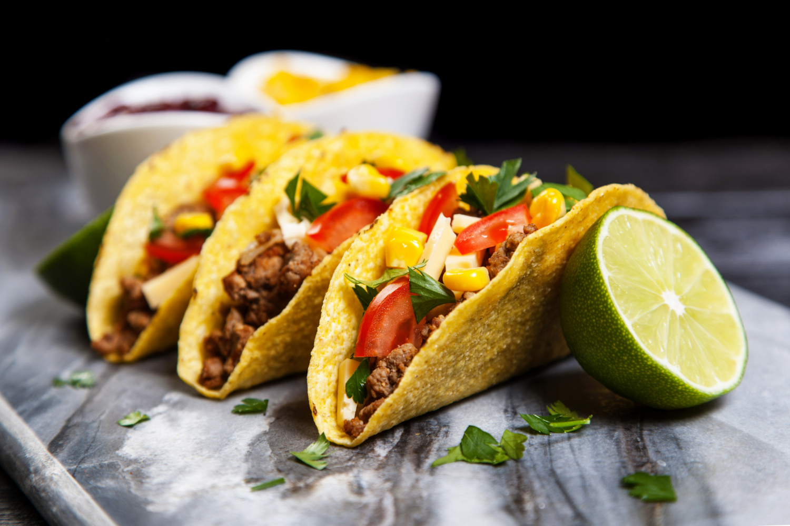
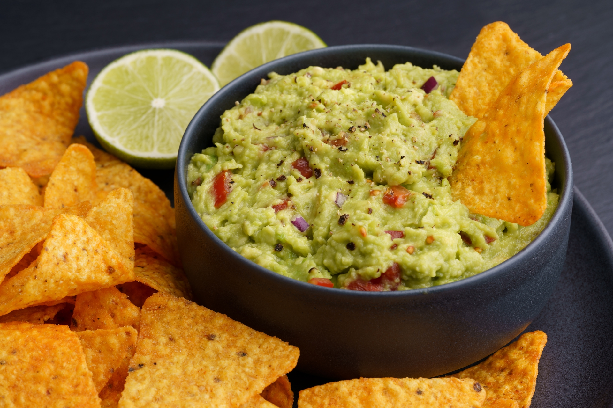
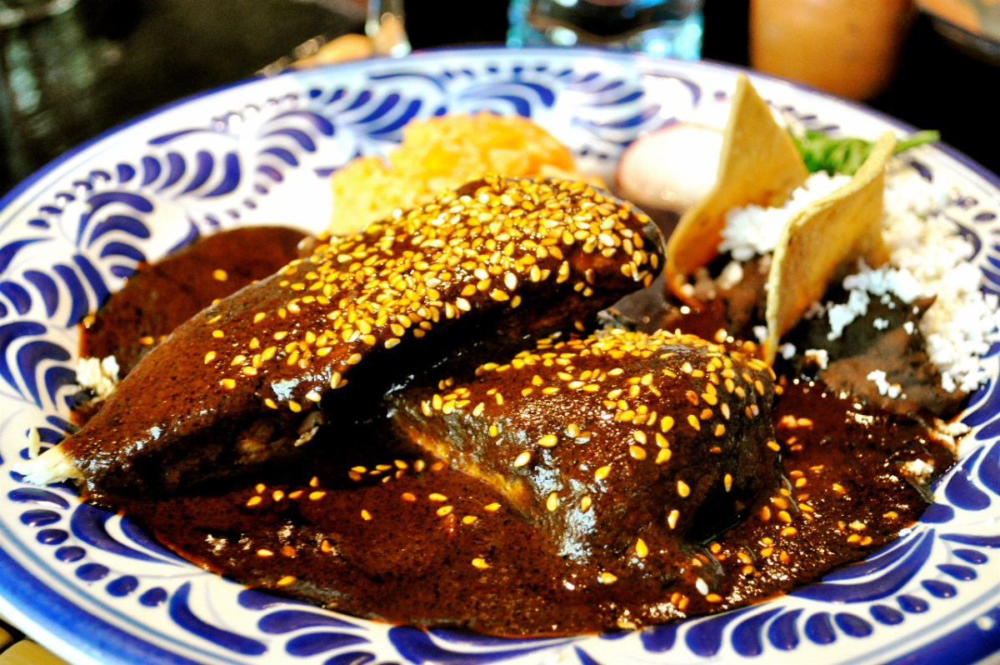

Cuisine mexicaine · Saveurs authentiques · Patrimoine UNESCO
Sabores de México
La gastronomie mexicaine, inscrite au patrimoine de l'UNESCO, est l'une des plus riches et des plus variées au monde.
Cuisine mexicaine · Saveurs authentiques · Patrimoine UNESCO
La gastronomie mexicaine, inscrite au patrimoine de l'UNESCO, est l'une des plus riches et des plus variées au monde.
Depuis 2010, la gastronomie mexicaine est reconnue par l'UNESCO comme patrimoine immatériel de l'humanité. Héritière des civilisations précolombiennes et des influences espagnoles, elle repose sur le maïs, le piment, la tomate et le cacao — des ingrédients qui racontent des millénaires d'histoire.

Tortillas garnies de viande marinée, légumes croquants et salsa épicée. Le plat le plus iconique du Mexique existe en d'innombrables déclinaisons régionales — al pastor, carnitas, barbacoa…

Avocat frais écrasé avec citron vert, oignon rouge, coriandre et piment. Simple, frais et indispensable — il accompagne la quasi-totalité des repas mexicains depuis des siècles.

Une sauce complexe mêlant plus de vingt ingrédients : piment, chocolat noir, épices et graines. Servi sur du poulet, c'est la fierté culinaire de l'État de Puebla et un symbole de la cuisine mexicaine.
Distillé à partir d'agave, le mezcal est le précurseur du tequila. Fumé, complexe et artisanal — à déguster lentement dans un verre de barro.
Boisson légère à base de fruits (hibiscus, melon, tamarin) diluée dans de l'eau fraîche. Incontournable pour se désaltérer sous le soleil mexicain.
Boisson chaude épaisse à base de maïs, cannelle et sucre de canne. Consommée depuis l'époque préhispanique, souvent accompagnée de tamales.
Les meilleures taquerías sont souvent de simples stands de rue. Suivez les files d'attente de mexicains — c'est le meilleur indicateur de qualité.
Les salsas varient en intensité. N'hésitez pas à demander "¿Pica mucho?" avant de verser. Commencez par la salsa verte, souvent plus douce.
La comida (déjeuner) est le repas principal, servi entre 14h et 16h. C'est souvent le moment idéal pour découvrir un menú del día complet et économique.
Chaque État a sa fierté culinaire : mole à Oaxaca, cochinita pibil au Yucatán, birria au Jalisco. Adaptez votre itinéraire pour goûter chaque terroir.